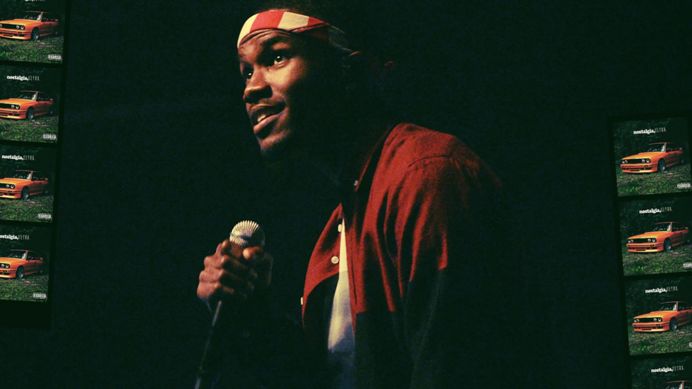

Frank Ocean was born in Long Beach, California, on October 28, 1987. He grew up in New Orleans, but moved to Los Angeles in his late teens to pursue a career in music. Ocean started out ghostwriting tracks for such pop stars as Justin Bieber and Beyoncé, but soon achieved fame as an artist when, in 2011, he released a mixtape of his own music, titled nostalgia, ULTRA. His next effort, channel ORANGE, was unveiled in 2012 to both critical and popular acclaim, and he followed with the back-to-back releases of Endless and Blonde in 2016.
Famed musician Frank Ocean was born Christopher Edwin Breaux on October 28, 1987, in Long Beach, California. When he was a child, Breaux’s family moved to New Orleans, where he spent the majority of his youth. He was exposed to the jazz scene there, and also listened to his mother’s R&B CDs.
Early Life
While in high school, Ocean began recording music and worked various odd jobs to pay for the studio time. After graduating from high school in 2005, he enrolled at the University of New Orleans. However, in August of that year, Hurricane Katrina hit and wreaked havoc on the region. Amidst the chaos, the facility where Ocean was recording at the time was badly flooded and looted, prompting him to set aside his academic ambitions and take some time to pursue his musical goals.
Ocean moved to Los Angeles to continue his recording projects, intending to stay only a short while. However, as he continued to make meaningful contacts within the music industry, he decided to extend his stay. To make money during this time, Ocean took a job processing insurance claims. Eventually, he got a songwriting deal and began collaborating with producers. He contributed to the writing of the Justin Bieber track “Bigger” in 2008, and the following year he co-wrote the track “I Miss You” with Beyoncé Knowles for her album 4.
That same year, Ocean began to work with the Los Angeles-based hip-hop collective Odd Future, most notably with Tyler, the Creator, who encouraged Ocean in his songwriting. Around this time, he also met producer Tricky Stewart, who helped land Ocean a contract with Def Jam as a solo artist. The following year, Ocean officially changed his name to Christopher Francis Ocean, believing that the new name would look better on magazine covers.
Breakout Success
In February 2011, Ocean released a mixtape titled nostalgia, ULTRA. He released the recordings as a free download on his Tumblr site, without Def Jam’s knowledge, announcing via Twitter that he had done so because the label had not been supportive of his efforts after signing him. Ocean’s self-released recording featured a mixture of both originally composed music and heavy samples of tracks from the likes of Coldplay, the Eagles and MGMT. The album was widely acclaimed, and received enthusiastic reviews from NPR, Rolling Stone and the BBC, among many others. Also impressed with his efforts were superstars Jay-Z and Kanye West, who, at Beyoncé’s prompting, enlisted Ocean to contribute vocals for two tracks from their August 2011 album, Watch the Throne.

Still riding the wave of success that followed his release of nostalgia, ULTRA, Ocean began to work on a follow-up album to be released by Def Jam records, with whom he had begun to repair his relationship. In June 2012, he unveiled a new track, Pyramids, again via his Tumblr site. The following month he performed another track from the album on Late Night with Jimmy Fallon. Also in July, Ocean posted an open letter to his website, in which he revealed that he had feelings for both men and women. Many of his colleagues in the music business immediately showed their public support for his courageous decision to be open about his sexuality, although he made a point not to label his orientation.
Ocean’s second album, channel ORANGE, was released for download on iTunes on July 10, 2012, a week earlier than scheduled, to avoid the album being leaked on the Internet. Within hours of its release, the album was No. 1 on the Top Albums chart. Ocean also made the album available to stream in full on his Tumblr site. A week later, channel ORANGE was released in all other formats.
Like nostalgia ULTRA, channel ORANGE met with almost universal critical acclaim, topping music charts around the world and earning Ocean comparisons to such R&B greats as Prince and Stevie Wonder. Most notably, the album went on to win the 2013 Grammy Award for best urban contemporary album. Additionally, "No Church in the Wild," written by Jay-Z and Kanye West and featuring Ocean's vocals, won the 2013 Grammy for best rap/sung collaboration.